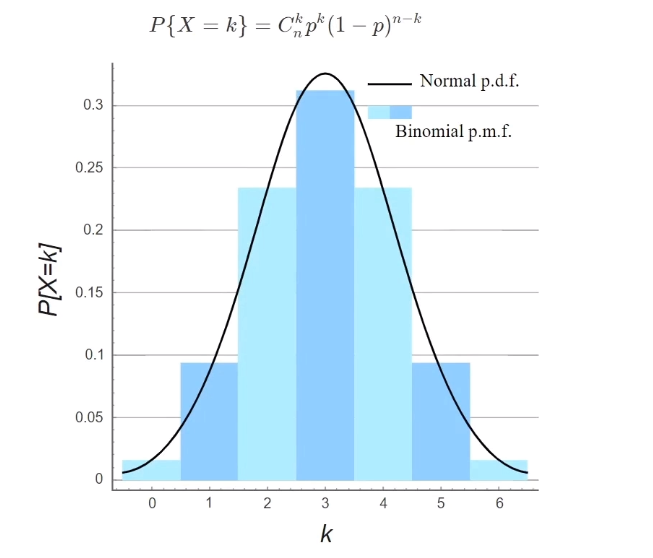
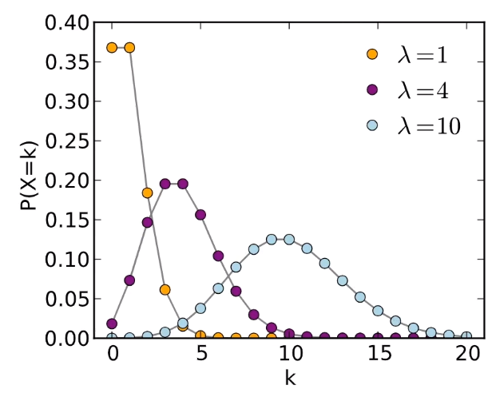
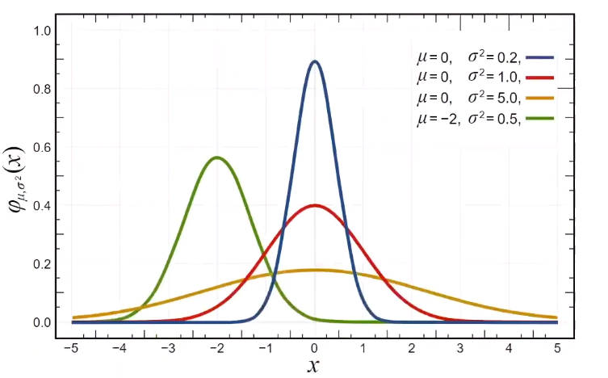
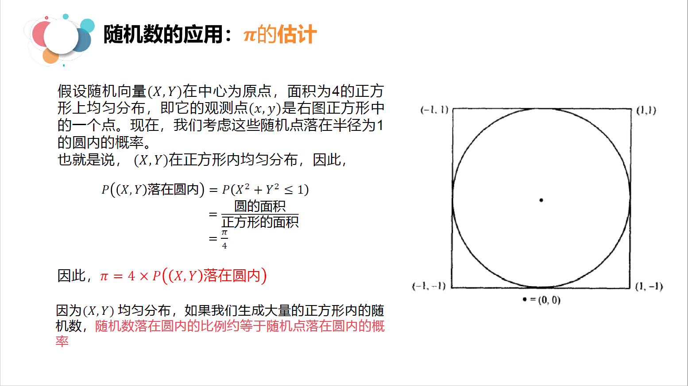
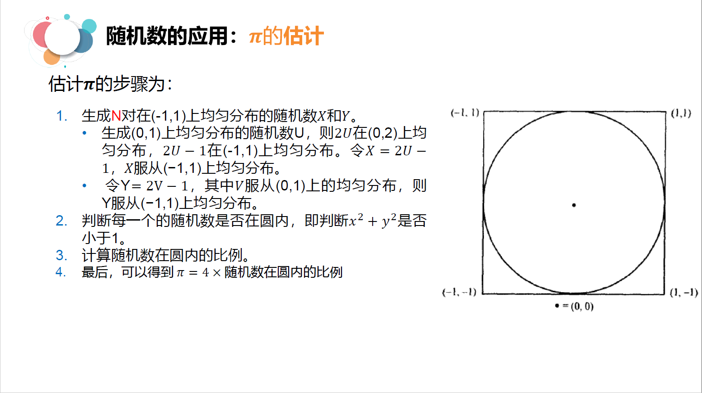
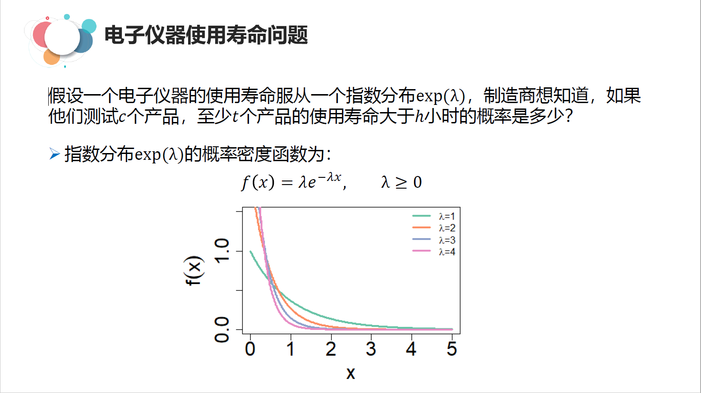
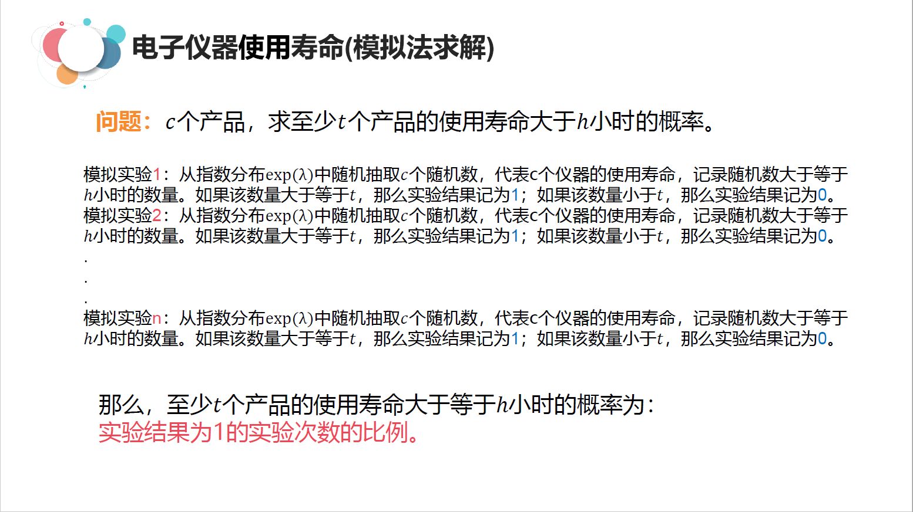

概率论与数理统计
Contents
概率论与数理统计#
1.随机事件与概率#
1.1 基础概念#
随机试验： 试验是指为了察看某事的结果或某物的性能而从事的某种活动. 在概率论与数理统计中，一个试验如果具有以下3个特点:
(1) 可重复性: 在相同条件下可以重复进行：
(2) 可观察性: 每次试验的可能结果不止一个，并且能事先明确试验的所有可能结果:
(3) 不确定性: 一次试验之前，不能预知会出现哪一个结果。 就称这样的试验是一个随机试验，也简称为试验。
样本点和样本空间：
每次试验的每一个结果称为基本事件，也称作样本点，记作 \(w_{1}, w_{2}, \cdots\) 全部样本点的集合称为样本空间，记作 \(\Omega,\) 则 \(\Omega=\) \(\left\{w_{1}, w_{2}, \cdots\right\}\)
例子:
投郑一颗均匀股子，观察出现的点数。这是一个随机试验。样本空间 \(\Omega=\{1,2,3,4,5,6\} .\)
随机事件：
基本事件是不可再分解的、最基本的事件，其他事件均可由它们复合而成，由基本事件复合而成的事件称为随机事件或简称事件。 常用大写字母 \(A, B, \quad C\) 等表示事件。比如 \(A=\{\) 出现的点数为偶数 \(\}=\{2,4,6\} .\)
1.2 随机事件与概率#
随机事件在一次试验中是否发生虽然不能确定，但让人感兴趣的是随机事件在一次试验中发生的可能性有多大。概率就是用来描述随机事件发生的可能性大小的。比如抛硬币的试验，拖得次数越多，出现正面的次数与投郑次数之间的比例（也叫频率 )愈加趋 于0.5。
它的数学定义为: = :
在多次重复试验中，若事件A发生的频率稳定在确定常数 \(p\) 附近摆动，且随着试验次数的增加，这种摆动的幅度是很微小的。 则称确定常数p为事件A发生的概率，记作 \(P(A)=p .\)
思考题
设一年有365天，求下列事件 \(A, B\) 的概率:
\(A=\{\)n个人中没有2人同一天生日 \(\}\)
\(B=\{\) n个人中有2人同一天生日 \(\}\)
解
显然事件 \(A, \quad B\) 是对立事件, \(P(B)=1-P(A)\). 由于每个人的生日可以是365天的任意一天，因此， \(n\) 个人的生日有 \(365^{n}\) 种可能结果，而且每种结果是等可能的，因而是古典概型，事件A的发生必须是 \(n\) 个不同的生日，因而 \(A\) 的样本点数为从365中取 \(n\) 个的排列数 \(P_{365}^{n},\) 于是
$\(
\begin{array}{c}
P(A)=\frac{P_{365}^{n}}{365^{n}} \\
P(B)=1-P(A)=1-\frac{P_{365}^{n}}{365^{n}}
\end{array}
\)$
1.3 条件概率#
定义
设 \(A, B\) 是两个事件，且 \(P(A)>0,\) 则称
$\(
P(B \mid A)=\frac{P(A B)}{P(A)}
\)\(
为在事件A发生的条件下，事件B的条件概率。
例子
某种元件用满6000h未坏的概率是3/4，用满10000h未坏的概率是1 \)/ 2\( ，现有一个此种元件，已经用过 \)6000 h\( 未坏，试求它能用到10000h的概率。
解
设A表示\{用满10000h未坏\}, \)B\( 表示\{用满 \)6000 h\( 未坏\}, 则
\)\(
P(B)=3 / 4, P(A)=1 / 2
\)\(
由于 \)A \subset B, A B=A,\( 因而 \)P(A B)=1 / 2,\( 故
\)\(
P(A \mid B)=\frac{P(A B)}{P(B)}=\frac{P(A)}{P(B)}=\frac{\frac{1}{2}}{\frac{3}{4}}=\frac{2}{3}
\)$
1.4 事件的独立性#
定义 如果事件B发生的可能性不受事件A发生与否的影响，即 $\( P(B \mid A)=P(B) \)\( 则称事件B对于事件A独立.显然，若B对于A独立，则 \)A\( 对于 \)B\( 也一定独立，称事件 \)A\( 与事件 \)B\( 相互独立. 例子. 口袋里装有5个黑球与3个白球，从中有放回地取2次，每次取一个，设事件A表示第一次取到黑球，事件B表示第二次取到黑球，则 有 \)\( P(A)=\frac{5}{8}, P(B)=\frac{5}{8}, P(A B)=\frac{5}{8} \times \frac{5}{8}=\frac{25}{64} \)\( 因而 \)\( P(B \mid A)=\frac{P(A B)}{P(A)}=\frac{5}{8} \)\( 因此， \)P(B \mid A)=P(B),\( 事实上还可以算出 \)P(B \mid \bar{A})=P(B)\( 。这表明不论 \)A\( 发是不发生，都对 \)B$ 发生的概率没有影响。即B 与A独立.
性质：
事件 \(A\) 和事件 \(B\) 相互独立的充分必要条件是
$\(
P(A B)=P(A) P(B)
\)$
2.全概率公式和贝叶斯公式#
2.1 全概率公式#
定义：
如果事件 \(A_{1}, A_{2}, \cdots, A_{n}\) 是一个完备事件组，并且都具有正概率，则有：
$\(
\begin{array}{c}
P(B)=P\left(A_{1}\right) P\left(B \mid A_{1}\right)+P\left(A_{2}\right) P\left(B \mid A_{2}\right)+\cdots+P\left(A_{n}\right) P\left(B \mid A_{n}\right) \\
=\sum_{i=1}^{n} P\left(A_{i}\right) P\left(B \mid A_{i}\right)
\end{array}
\)\(
对于任何事件 \)B,\( 事件 \)A \bar{A}\( 构成最简单的完备事件组，根据全概率公式得
\)\(
\begin{aligned}
P(B) &=P(A B+\bar{A} B)=P(A B)+P(\bar{A} B) \\
&=P(A) P(B \mid A)+P(\bar{A}) P(B \mid \bar{A})
\end{aligned}
\)$
2.2 贝叶斯公式#
定义：
设 \(A_{1}, A_{2}, \cdots, A_{n}\) 是一完备事件组，则对任一事件 \(B, P(B)>0,\) 有
$\(
P\left(A_{i} \mid B\right)=\frac{P\left(A_{i} B\right)}{P(B)}=\frac{P\left(A_{i}\right) P\left(B \mid A_{i}\right)}{\sum_{i=1}^{n} P\left(A_{i}\right) P\left(B \mid A_{i}\right)}
\)$
以上公式就叫贝叶斯公式，可由条件概率的定义及全概率公式证得。
例子:
市场上供应的某种商品只由甲、乙、丙3个厂生产，甲厂占45%，乙厂占35%，丙厂占20%。如果各厂的次品率依次为 4%, 2%, 5% 。现从市场上购买1件这种商品，发现是次品，试判断它是由甲厂生产的概率。
设事件 \(A_{1}, A_{2}, A_{3},\) 分别表示“商品为甲、乙、丙厂生产的”，事件 \(B\) 表示“商品为次品”，由题意得到概率
$\(
\begin{array}{c}
P\left(A_{1}\right)=45 \%, P\left(A_{2}\right)=35 \%, P\left(A_{3}\right)=20 \% \\
P\left(B \mid A_{1}\right)=4 \%, P\left(B \mid A_{2}\right)=2 \%, P\left(B \mid A_{3}\right)=5 \%
\end{array}
\)\(
根据贝叶斯公式，可得:
\)\(
\begin{aligned}
P\left(A_{1} \mid B\right) &=\frac{P\left(A_{1}\right) P\left(B \mid A_{1}\right)}{P\left(A_{1}\right) P\left(B \mid A_{1}\right)+P\left(A_{2}\right) P\left(B \mid A_{2}\right)+P\left(A_{3}\right) P\left(B \mid A_{3}\right)} \\
&=\frac{45 \% \times 4 \%}{45 \% \times 4 \%+35 \% \times 2 \%+20 \% \times 5 \%} \approx 0.514
\end{aligned}
\)\(
在“购买一件商品”这个试验中， \)P\left(A_{i}\right)\( 是在试验以前就已经知道的概率，所以习惯地称为先验概率。试验结果出现了次品（即 \)B\( 发 生），这时条件概率 \)P\left(A_{i} \mid B\right)\( 反映了在试验以后对 \)B$ 发生的“来源”(即次品的来源）的各种可能性的大小，通常称为后验概率。
3.随机变量#
3.1 随机变量#
把试验的结果与实数对应起来，随试验结果的不同而变化的量就是随机变量，包含离散型随机变量和连续型随机变量。
例子：
郑一枚匀称的硬币，观察正面、背面的出现情况。这一试验的样本空间为 \(\Omega=\{H, T\}\), 其中，H表示”正面朝上”, \(T\) 表示“背面 朝上”。如果引入变量 \(X\) ，对试验的两个结果进行数值化，将 \(X\) 的值分别规定为1和0，即
$\(
X=\left\{\begin{array}{ll}
1 & \text { if } \text { 出现 } H \\
0 & \text { if } & \text { 出现 } T
\end{array}\right.
\)\(
这里的 \)X$ 就叫随机变量，因为它能取的值是离散的，我们就叫它离散型随机变量。
3.2 概率分布#
定义：设离散型随机变量 \(X\) 的所有可能取值为 \(x_{1}, x_{2}, \cdots, x_{n},\) 称为 \(X\) 的概率分布。
离散型随机变量 \(X\) 的分布律具有下列基本性质：
\(p_{k} \geq 0, k=1,2, \cdots\)
\(\sum_{i=1}^{+\infty} p_{k}=1\)
二项分布：
二项分布是一种离散型的概率分布。二项代表它有两种可能的结果：成功或者不成功。每次试验必须相互独立，重复n次，并且每 次试验成功的概率是相同的，为 \(p \); 失败的概率也相同，为 \(1-p\)。掷硬币就是一个典型的二项分布。当我们要计算抛硬币吻，恰巧有 \(x\) 次正面朝上的概率，可以使用二项分布的公式:
$\( P\{X=k\}=C_{n}^{k} p^{k}(1-p)^{n-k} \)$

泊松分布：
如果随机变量 \(X\) 的概率分布为
$\(
P\{X=k\}=\frac{\lambda^{k}}{k !} e^{-\lambda}, k=0,1,2, \cdots
\)\(
式中， \)\lambda>0\( 为常数，则称随机变量 \)X\( 服从参数为 \)\lambda\( 的泊松(Possion)分布，记为 \)X \sim P(\lambda)$.

3.3 概率密度函数#
定义：若存在非负函数 \(f(x)\), 使一个连续型随机变量 \(X\) 取值于任一区间 \((a, b]\) 的概率可以表示为 $\( P\{a<X \leq b\}=\int_{a}^{b} f(x) d_{x} \)$
正态分布：
正态分布是概率论中最重要的连续型分布，在19世纪前叶由德国数学家高斯（Gauss）加以推广，故又常称为高斯分布。 正态分布的概率密度函数曲线呈钟形，概率密度函数为
$\(
f(x)=\frac{1}{\sqrt{2 \pi} \sigma} e^{-\frac{(x-\mu)^{2}}{2 \sigma^{2}}}
\)\(
具有两个参数 \)\mu\( 和 \)\sigma^{2}\( 。第一参数 \)\mu\( 是代表服从正态分布的随机变量的均值，第二个参数 \)\sigma^{2}\( 是此随机变量的方差。
如果一个随机变量 服从均值为 \)\mu,\( 标准差为 \)\sigma\( 的正态分布，数学上记作
\)\(
X \sim N\left(\mu, \sigma^{2}\right)
\)$
我们通常所说的标准正态分布均值为0, 标准差为1的正态分布。

3.4 随机变量的期望#
对于一个随机变量，时常要考虑它的平均取什么，期望就是概率中的平均值，对随机变量中心位置的一种度量。 例子. 经过长期观察积累，某射手在每次射击中命中的坏数 \(X\) 服从分布： $\( \begin{array}{|c|c|c|c|c|c|c|c|} \hline \mathrm{X} & 0 & 5 & 6 & 7 & 8 & 9 & 10 \\ \hline p_{i} & 0 & 0.05 & 0.05 & 0.1 & 0.1 & 0.2 & 0.5 \\ \hline \end{array} \)\( 求这个射手平均命中的坏数是多少? 解 一种很自然的考虑是：假定该射击手进行了100次射击，那么，约有5次命中5坏，5次命中6坏，10次命中7坏，10次命中8坏，20 次命中9坏，50次命10，没有脱革，从而在一次射击中，该射手平均命中的坏数为： \)\frac{1}{100}(10 \times 50+9 \times 20+8 \times 10+7 \times 10+6 \times 5+5 \times 5+0 \times 0)=8.85\( 所以，我们可以看到离散型的随机变量的期望值可以表示为： \)E(X)=\sum_{i=1}^{+\infty} x_{i} p_{k}$
期望的性质：
\(E(c)=c\)
\(E(X+c)=E(X)+c\)
\(E(k X)=k E(X)\)
\(E(k X+c)=k E(X)+c\)
\(E(X+Y)=E(X)+E(Y)\)
3.5 随机变量的方差：#
方差表示了随机变量的变异性，方差越大，随机变量的结果越不稳定。
定义：随机变量，若
$\(
E[X-E(X)]^{2}
\)\(
存在，则称其为 \)X\( 的方差，记为 \)D(X),\( 即
\)\(
D(X)=E[X-E(X)]^{2}
\)\(
而称 \)\sqrt{D(X)}\( 为 \)X\( 的标准差或均方差。
由方差的定义和数学期望的性质，可以推出方差的计算公式:
\)\(
D(X)=E\left(X^{2}\right)-[E(X)]^{2}
\)$
方差的性质
(1) \(D(c)=0\)
(2) \(D(X+c)=D(X)\)
(3) \(D(c X)=c^{2} D(X)\)
例子：
甲、乙两车间生产同一种产品，设1000件产品中的次品数分别为随机变量 \(X, Y,\) 已知他们的分布律如下:
$\(
\begin{array}{ccccc}
\mathbf{X} & \mathbf{0} & 1 & \mathbf{2} & \mathbf{3} \\
\hline p_{i} & 0.2 & 0.1 & 0.5 & 0.2
\end{array}
\)\(
与
\)\(
\begin{array}{|c|c|c|c|c|}
\hline \mathrm{Y} & 0 & 1 & 2 & 3 \\
\hline p_{i} & 0.1 & 0.3 & 0.4 & 0.2 \\
\hline
\end{array}
\)\(
试讨论甲乙两者车厢的质量。
解
先计算均值
\)\(
\begin{array}{l}
E(X)=0 \times 0.2+1 \times 0.1+2 \times 0.5+3 \times 0.2=1.7 \\
E(Y)=0 \times 0.1+1 \times 0.3+2 \times 0.4+3 \times 0.2=1.7
\end{array}
\)\(
得到：甲、乙两车间次品数的均值相同。 再计算方差：
\)D(X)=(0-1.7)^{2} \times 0.2+(1-1.7)^{2} \times 0.1+(2-1.7)^{2} \times 0.1+(2-1.7)^{2} \times 0.5+(3-1.7)^{2} \times 0.2=1.01$
\(D(Y)=(0-1.7)^{2} \times 0.1+(1-1.7)^{2} \times 0.3+(2-1.7)^{2} \times 0.4+(2-1.7)^{2} \times 0.4+(3-1.7)^{2} \times 0.2=0.81\)
得到 \(D(X)>D(Y),\) 说明乙车间的产品质量较稳定。
随机模拟1：\(\pi\)的估值#
 
# pi的估计问题
import numpy as np
def pi_estimate(n):
'''
n为投点的数量
'''
n_rand_X = np.random.uniform(-1.0,1.0,n)
n_rand_Y = np.random.uniform(-1.0,1.0,n)
## 判断是否在圆内
distance = np.sqrt(n_rand_X**2 + n_rand_Y**2)
dis_n = float(len(distance[distance<=1.0]))
return 4 * (dis_n / n)
for i in [10,50,100,500,1000,5000,10000,50000,100000,500000,10000000]:
print("pi的估计值为",pi_estimate(i))
pi的估计值为 2.8
pi的估计值为 2.8
pi的估计值为 3.08
pi的估计值为 3.112
pi的估计值为 3.132
pi的估计值为 3.1632
pi的估计值为 3.1516
pi的估计值为 3.1388
pi的估计值为 3.1388
pi的估计值为 3.138104
pi的估计值为 3.1416736
?np.random.uniform
随机模拟2:电子元件寿命问题#


# 电子元件寿命问题
import numpy as np
def ele_life(n,c,h,t,lamb):
"""
参数n:模拟实验的次数
参数c:每次试验中的c个元件
参数t:每c个元件中规定的合格品数量
参数h:小时数
"""
times = 0.0
for i in range(n):
c_rand = np.random.exponential(1/lamb,c)
c_rand_t = len(c_rand[c_rand>h])
if c_rand_t > t:
times = times + 1
return times / n
ele_life(10000,1000,18,20,0.2)
0.9133
?np.random.exponential
随机模拟3：三门问题#
蒙提霍尔问题：假如你参与一个有主持人的游戏，你会看见三扇关闭了的门，其中一扇的后面有一辆汽车，另外2扇门后面各是一只山羊，你看不见门后面的情况，但主持人知道一切。你被主持人要求在三扇门中选择一扇，但不能打开，在你选定之后主持人开启了另一扇后面有山羊的门，然后你可以坚持原来选定的门，也可以改主意重新选择。问题是：改与不改对选中汽车的概率有影响吗？请使用模拟实验的方法回答该问题。
# 三门问题
import numpy.random as random
def MontyHallProblem(n_test):
#测试次数
winning_door = random.randint(0,3,n_test)
first_get = 0
change_get = 0
for winning_doors in winning_door:
act_door = random.randint(0,3)
if winning_doors == act_door:
first_get += 1
else :
change_get += 1
first_pro = first_get / n_test
change_pro = change_get / n_test
compar1 = round(change_get / first_get,2)
print ("在%d次测试中,坚持原则第一次就选中的次数是%d,改变决定选择另一扇门中奖的次数是%d"% (n_test,first_get,change_get))
print ("概率分别是{0}和{1}，改变决定选择另一扇门中奖几率是坚持选择的{2}倍".format(first_pro,change_pro,compar1))
MontyHallProblem(1000000)
在1000000次测试中,坚持原则第一次就选中的次数是333388,改变决定选择另一扇门中奖的次数是666612
概率分别是0.333388和0.666612，改变决定选择另一扇门中奖几率是坚持选择的2.0倍